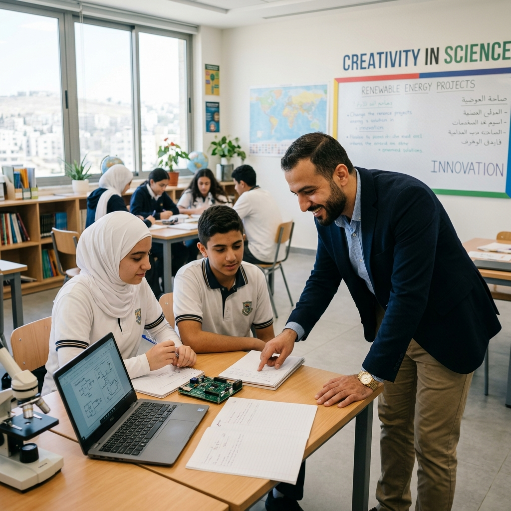
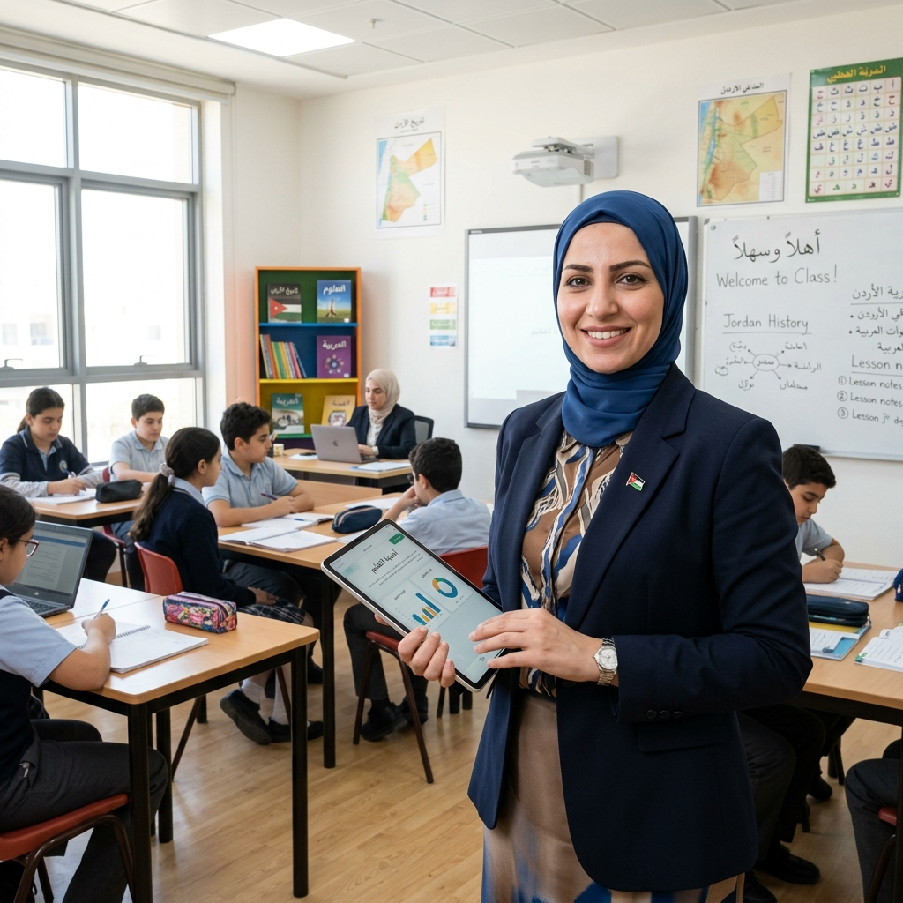

البيئة التعليمية الأذكى في الأردن
نجمع بين أصالة القيم التربوية الأردنية وأحدث المعايير العالمية في تقنيات (EdTech)؛ لتمكين المعلم، وإثراء مسيرة الطالب، وبناء بيئة مدرسية متكاملة ترتكز على البيداغوجيا الرقمية وحوكمة البيانات.
طالب وطالبة
محتوى رقمي متمايز يواكب المناهج الأردنية الحديثة.
معلم وكادر إداري
أدوات رصد، تخطيط دراسي، وتقييم فوري وتفاعلي.
صرح تعليمي متصل
شبكة رقمية موحدة تغطي كافة مديريات المملكة.
سيادة وأمان البيانات
سحابة وطنية مشفرة تضمن أعلى معايير الخصوصية.
بيئة موحدة تخدم أطراف العملية التعليمية
واجهات مخصصة لكل دور تلبي المهام اليومية بأقصى درجات السلاسة والوضوح
تمكين المعلم بأحدث الأدوات البيداغوجية
توفر المنظومة للمعلم بيئة متكاملة لإعداد الخطط الدراسية، رصد الحضور بنقرة واحدة، وتطبيق استراتيجيات التعليم المتمايز لمراعاة الفروق الفردية بين الطلبة، مع تقديم تغذية راجعة فورية.
الأستاذ أحمد الحنيطي
معلم الرياضيات • مدرسة الملك عبدالله الثاني للتميز
معايير التميز في منظومة عون
تكامل متين بين أصالة الرسالة التربوية الأردنية وأحدث المعايير التقنية العالمية

تمكين المعلم الأردني
توفير أدوات ذكية لإعداد الخطط، وتطبيق استراتيجيات (التعليم المتمايز)، وقياس التحصيل الأكاديمي، بما يختصر الوقت الإداري ويركز الجهد على جودة التدريس وبناء شخصية الطالب.

شراكة مجتمعية وأسرية فاعلة
بناء جسور تواصل شفافة بين المدرسة وولي الأمر، تتيح المتابعة اليومية واللحظية لتقدم الأبناء، والاطلاع على سجلات الحضور والسلوك ومواعيد الامتحانات بصورة مستمرة.
درع سيبراني وسحابة وطنية
تشفير متقدم لبيانات الطلبة والسجلات الأكاديمية محلياً داخل المملكة وفق أعلى معايير أمن المعلومات العالمية.
البيداغوجيا والتعليم المتمايز
تطويع التكنولوجيا لمراعاة الفروق الفردية بين الطلبة، ومساعدة المعلم على صياغة مسارات علاجية وإثرائية ملائمة.
ذكاء الأعمال وحوكمة البيانات (BI)
لوحات قياس أداء فورية تمنح مدراء المدارس وصناع القرار قراءة واضحة ومباشرة لواقع الميدان والتخطيط السليم.
مستقبل التعليم الأردني الذكي يبدأ هنا
سواءً كنت معلماً، طالباً، ولي أمر، أو قائداً مدرسياً، منصة عون هي بوابتك الوطنية لتجربة تعليمية حديثة ومتكاملة.